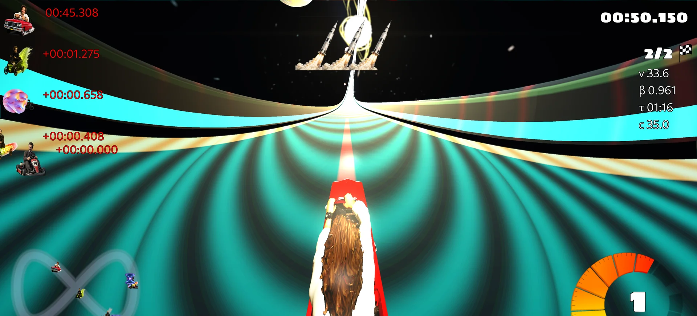

Relativistic aberration
The CPU and GPU implementations transform viewing directions using a Lorentz-derived aberration mapping. At high beta, forward and peripheral directions appear redistributed.
Source-linked guide
The game combines implemented special-relativistic calculations with deliberately playful approximations. This page separates the two.
Special relativity
The in-game speed of light c is adjustable from 15 to 1000 game units per second. For a kart moving at speed v, the relativity module calculates beta and the Lorentz factor:
Beta equals speed divided by the speed of light; gamma equals one divided by the square root of one minus beta squared.
Per-kart proper time accumulates at Δτ = Δt / γ. The race HUD can display velocity, beta, proper time, and the configured c. Ordinary race timing remains coordinate time; proper time is additional telemetry.

How objects look
The CPU and GPU implementations transform viewing directions using a Lorentz-derived aberration mapping. At high beta, forward and peripheral directions appear redistributed.
The renderer estimates where light would have left a moving object before reaching the observer, then combines that apparent position with the aberration mapping.
Important distinction: the scene pipeline explicitly avoids adding a blanket Lorentz contraction to positions, normals, and tangents. “Full Lorentz transformation of the world” would overstate what is implemented.

Colour and direction
The colour shader calculates a directional Doppler/searchlight factor based on gamma and the angle between velocity and view direction. It approximately remaps RGB energy through spectral response curves and applies relativistic beaming.
The effect is conditional. Current runtime code enables it for selected item or status states, including particular photon, squash, and bomb effects; it does not continuously colour-shift the screen simply because the kart is moving fast.
Mechanics
A wave expands to a 75-unit radius over three seconds. Eligible opponents inside it receive a delayed, distance-scaled reduction in effective c; shields can absorb the effect.
A heavy projectile steers toward a target and registers analytic lensing and accretion-disc effects. It does not attract surrounding karts into a simulated orbit.
Two linked endpoints form a bidirectional shortcut. Entering one moves the kart to the other while transforming orientation and velocity.
Curved-spacetime inspiration
Black-hole and wormhole effects make curved-spacetime ideas legible at racing speed. The displacement shader uses procedural analytic shapes and screen-space distortion. It does not march light rays through a numerical spacetime metric.
Wormholes teleport physical game objects, but true see-through portal render targets are explicitly not implemented.
Read the lensing shader notes · Read the portal-rendering limitation

Scientific scope
The black-hole, wormhole, and gravitational-wave mechanics do not solve Einstein's field equations. “General-relativity-inspired” is accurate; “simulates general relativity” is not.
Driving uses Bullet-based arcade dynamics followed by a relativistic speed cap. A helper for longitudinal force scaling exists, but the live kart adapter currently leaves engine force unchanged.
Screen-space lensing, colour remapping, and apparent-position transforms are fast rendering techniques. They omit multi-bounce transport, calibrated spectra, and per-pixel geodesic tracing.
The equations, shader code, tests, and technical manuscript are public. Corrections and well-scoped improvements are welcome through GitHub.